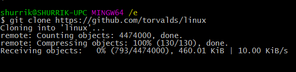

沉稳内敛,低调前行 这里是shurrik的堡垒
沉稳内敛,低调前行 这里是shurrik的堡垒
Code来源于我最喜欢的动漫Code Geass，Shurrik名字来源于WOW 60年代的盗贼皇帝，一个二流的通信工程师、业余的码农。
2013年毕业于电子科技大学(UESTC)通信学院(CCIE)，对通信、计算机、互联网、动漫、美剧等都有浓厚的兴趣。
网站主要记录自己生活与之相关的一些心得体会，转载一些技术文章，然后若干年后自己回顾一下， 看看当时的自己是多么幼稚，仅此而已。
人的成长就是这样的一个过程，观点和思想都在不断地变化，今天的自己都有可能会否定昨天的自己。而否定的过程，就是成长的过程。
Linux是自由和开放源代码的类UNIX操作系统
该操作系统的内核由Linus · Torvalds在1991年10月5日首次发布。

练手之作，花费4天，总共大概8个小时
这是我第一次如此认真的写一个页面
想法和配色参考于 git - 简易指南
联系部分的图标采用修改过的 Zocial
...
主页挂在 github上
开源是一种伟大的思想
因为人都是自私的
我也不例外